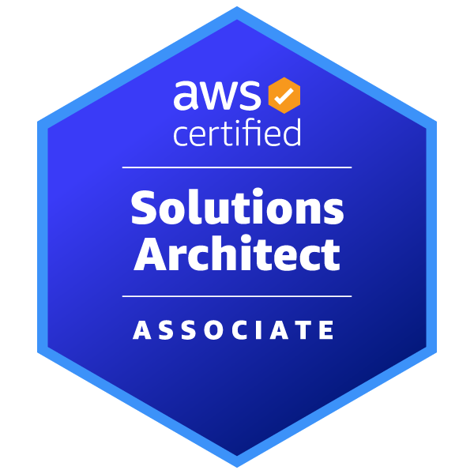
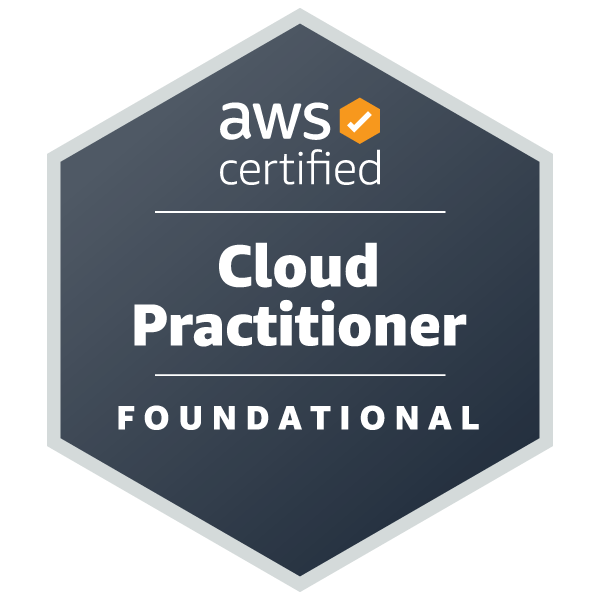

LyonnelDzotang Tchassen
L’humain au cœur de l’action.
Explorer mon profil :
Conception logicielle · Cloud · Leadership d’équipe
Conception logicielle · Cloud · IA
Leadership d’équipe · Gestion de projet · Conduite du changement
À propos de moi
Consultant senior · CGI, Québec, Canada
Je suis Lyonnel Dzotang Tchassen, consultant senior basé à Québec, Canada. Issu du Master MIAGE de l'Université de Douala et certifié AWS, Oracle et Scrum, je cumule plus de 11 ans d'expérience dans la conception et la livraison de systèmes d'information pour la banque et le commerce extérieur.
Chez CGI, je suis Tech Lead d'une équipe de six personnes en contexte bancaire réglementé. Je conçois des microservices en Java et des applications cloud-native sur AWS, mets en place des pipelines CI/CD avec GitLab et Terraform, et accompagne l'adoption des outils d'IA dans l'équipe.
Professionnel des technologies de l'information basé à Québec, Canada, je compte plus de 11 ans d'expérience, dont plus de quatre en gestion. Mon parcours m'a mené du développement à la gestion : coordination de projets, encadrement d'équipes et conduite du changement.
Au GUCE, plateforme de transformation numérique reliée à huit partenaires institutionnels, j'ai représenté la Direction technique en comités, assuré le secrétariat technique du Bureau de gestion des projets (huit projets) et mis en place Power BI pour le pilotage. Chez CGI, je contribue à la normalisation et à la traçabilité des données bancaires. J'ai encadré des équipes jusqu'à huit personnes et accompagné les utilisateurs dans l'adoption de nouveaux systèmes.
"L'humain au cœur de l'action" est un slogan qui correspond parfaitement à mes aspirations.
Architecture Backend & Microservices
Conception d'APIs REST sécurisées avec Spring Boot, Java 17, JWT, Spring Security et architecture microservices
Cloud AWS & DevOps
Développement cloud-native avec Lambda, SQS, DynamoDB, S3 · CI/CD GitLab · Infrastructure Terraform · SonarQube
Développement Full-Stack
De Java Spring Boot côté serveur à Angular / AngularJS / Node.js côté client
Développement Mobile & Leadership
Applications Android natives · Coaching d'équipes · Code reviews · Recrutement technique
Gestion de mandats & PMO
Portefeuille de huit projets · Analyse et suivi des budgets · Secrétariat technique du comité : risques, comptes rendus, reddition de comptes
Pilotage par les données
Référentiel des échanges avec huit partenaires · Registre central et traçabilité en contexte bancaire · Power BI et indicateurs de délais
Leadership & gestion d'équipe
Équipe de huit personnes : embauche, évaluation, répartition du travail · Tech Lead d'une équipe de six · Recrutement
Conduite du changement
Formation et accompagnement des utilisateurs (CAMIS, SYGFR) · Adoption des outils d'IA en équipe
- 11+ années d’expérience
- 15+ projets réalisés
- 9 certifications
Me contacter
Un projet, une opportunité ou simplement envie d'échanger ? Écrivez-moi, je vous répondrai avec plaisir. Mon CV détaillé est disponible sur demande.
Mes compétences
Technique et gestion, au fil de mes projets et de mes postes
Compétences techniques
Technologies et outils utilisés dans mes projets
Compétences de gestion
Pratiques de gestion et de leadership exercées dans mes postes
Stack principale
Java 17 Spring Boot AWS Terraform CI/CD GitLab AngularGestion & leadership
Gestion d'équipe Gouvernance des données Gestion de projet Power BI & KPI Gestion du changement Scrum / AgileVoir la répartition complète par domaine
Certifications & formation
Certifications


Formations académiques
Mon expérience
Parcours professionnel depuis 2014
CGI
Transversal Poste actueljuin 2024 – Présent · Québec, Canada
Consultant senior · Deux mandats dans le secteur bancaire
- Normalisation des données transmises à un registre central, pour en assurer la qualité et l'intégrité conformément aux exigences réglementaires.
- Mise en œuvre de la traçabilité des accès aux données et des échanges entre systèmes, avec des éléments de suivi destinés aux équipes de sécurité de l'information.
- Participation au recrutement : évaluation technique d'une dizaine de candidats.
Tech Lead
juil. 2026 – présent · Équipe de six personnes
- Leadership technique et accompagnement des développeurs dans la conception, la qualité et l'évolution des solutions.
- Contribution aux décisions d'architecture avec les équipes produit, assurance qualité et DevOps.
- Accompagnement de l'adoption des outils d'intelligence artificielle dans les pratiques de l'équipe.
Développeur senior
juin 2024 – juin 2026 · Équipe de cinq personnes, avec des responsabilités de leadership technique
- Conception et développement d'applications bancaires en Java 17 (Spring Boot, JPA/Hibernate, APIs REST) et sur AWS (Lambda, Step Functions, S3, SQS, DynamoDB, IAM, RDS).
- Architecture des microservices, optimisation des performances et solutions évolutives et sécurisées.
- Pipelines CI/CD avec GitLab et déploiements automatisés sur AWS via Terraform.
- Revues de code, analyses statiques SonarQube et amélioration continue des pratiques de livraison et de qualité.
- Intégration d'outils IA (GitHub Copilot, ChatGPT) pour accélérer le développement et générer des tests unitaires.
SERVOO SARL
Transversaldéc. 2020 – mai 2024 · 3 ans 6 mois · Douala, Cameroun
Consultant en développement logiciel (temps partiel)
- Conception et déploiement d'une bourse de fret (projet SYGFR) et d'un système d'information sur les prix des marchés (projet CAMIS).
- Modélisation et développement des API; benchmark des outils et implémentation des CRUD.
- Hébergement et monitoring des applications.
- Formation et accompagnement des utilisateurs des projets CAMIS et SYGFR et coaching des équipes.
GUCE-GIE — Guichet unique du commerce extérieur
août 2018 – mai 2023 · 4 ans 10 mois · Douala, Cameroun
Plateforme de transformation numérique des formalités du commerce extérieur, reliée à huit partenaires institutionnels
Chef de service adjoint, statistiques et délais
déc. 2022 – mai 2023 · 6 mois
- Seconder le chef de service dans la gestion du service chargé des statistiques et du suivi des délais.
- Analyse comparative des solutions d'intelligence décisionnelle, puis mise en place de Power BI avec deux tableaux de bord : délais de passage des marchandises à la frontière et délais de traitement des requêtes du service à la clientèle.
- Définition des indicateurs de performance sur les délais; les tableaux de bord ont servi à définir des actions correctives et les prochaines cibles.
Chargé d'études, Direction technique
juin 2020 – déc. 2022 · 2 ans 7 mois · Secrétaire technique du Bureau de gestion des projets
- Représentation de la Direction technique au sein des comités liés au commerce extérieur.
- Suivi d'un portefeuille de huit projets et de la feuille de route du Bureau de gestion des projets.
- Analyse critique des budgets préparés par les chefs de projet avant leur validation par le comité, puis suivi de leur exécution.
- Préparation des sessions du comité : tableaux de bord, matrices de risques, comptes rendus et bilans.
- Suivi des engagements de la Direction, analyse des besoins et rédaction des cahiers des charges.
- Communication transversale entre les parties prenantes; organisation de séminaires et de conférences.
Administrateur du système d'information métier
nov. 2019 – juin 2020 · 8 mois
- Supervision de l'écosystème applicatif et des interfaces d'échange avec les partenaires institutionnels.
- Enrichissement du référentiel des échanges (types, formats, responsables des données) lors de l'intégration de nouveaux services.
- Extraction de données pour la direction générale à des fins de décision, en veillant à leur qualité et à leur confidentialité.
- Suivi de la disponibilité, déploiement des livrables et soutien de deuxième niveau.
Ingénieur développeur, intégration et API
août 2018 – oct. 2019 · 1 an 3 mois
- Développement et intégration de services de dématérialisation des formalités du commerce extérieur et de paiement électronique.
- Implémentation des workflows liés aux opérations du commerce extérieur.
- Développement d'applications mobiles (Android/iOS).
MyBonWays SARL
Transversaljanv. 2017 – août 2018 · 1 an 8 mois · Douala, Cameroun
Technical Manager — Cofondateur
- Encadrement d'une équipe de huit personnes : cinq collaborateurs directs, un stagiaire et deux prestataires externes.
- Gestion des collaborateurs (embauche, évaluation du rendement, répartition des tâches) et du budget de l'équipe technique.
- Direction des équipes backend, mobile et web; supervision du développement, du déploiement et de l'administration de la plateforme.
- Modélisation des applications, analyse des besoins et définition des services et API.
WOURI TECHNOLOGIES Co
Full-stack Developer
fév. 2015 – oct. 2016 · 1 an 9 mois · Douala, Cameroun
- Safer Today : Application mobile Android collectant et traitant les dangers autour des utilisateurs (notifications temps réel). Développement front Android, intégration REST APIs, back-end AWS (EC2, R53, CloudFormation, S3), Kafka, Apache Storm, Cassandra, GCM, XMPP.
- Strategy : Application de chat temps réel (Android). Développement front Android, intégration back-end XMPP/Ejabberd, AWS (S3, EC2), SCRUM.
- Directory Service : Application annuaire — rédaction de l'architecture, user stories. Spring Boot, Spring MVC, Spring Security, AngularJS, Java SE7, Apache Storm.
- ECaaS : Plateforme d'encodage vidéo — tests unitaires/intégration, architecture globale. Spring Boot, Spring MVC, Mockito, RestAssured, JUnit, Kafka, Zookeeper.
LRI SARL
Informaticien
nov. 2014 – déc. 2014 · 2 mois · Bafoussam, Cameroun
- Développement d'applications mobiles Android et intégration de services Java 7.
- Conception et maintenance de sites web sous WordPress et autres CMS.
- Intégration d'interfaces web en JavaScript, HTML et CSS.
Mes projets
Une sélection de projets développés au fil des années
Namoony
2026 — présent
Application de gestion des dépenses qui analyse chaque article des reçus pour montrer où va réellement l'argent, jusqu'au détail. Pensée pour les foyers du Québec, elle tient compte des taxes TPS et TVQ et constitue la première étape vers un copilote financier.
Vending Machine API
2022
API REST complète simulant une machine distributrice. Gestion des rôles vendeur/acheteur, dépôt de pièces, achat de produits avec rendu de monnaie, et authentification JWT. Inclut la gestion de sessions simultanées et la sécurité applicative.
QG-Gochiver
2017
Application cloud Spring Boot avec interface Thymeleaf et sécurité Spring Security. Persistance des données avec Spring Data JPA sur PostgreSQL, avec profils de configuration pour les environnements local et production.
Dashboard Full-Stack
2015 – 2017
Application web full-stack avec frontend AngularJS et backend Node.js/Express. Gestion des sessions utilisateurs avec MongoDB, authentification Stormpath, pipeline de build Grunt complet avec tests Karma/Jasmine et Protractor.
Gefi — Gestion Financière
2016 – 2018
Application de gestion financière développée avec Spring Boot et Spring Data REST. Architecture en couches avec accès aux données via JPA/Hibernate sur PostgreSQL. Utilisation de Lombok pour réduire le code boilerplate.
Relieferd — Application Android
2015 – 2016
Application Android native développée en Java avec Gradle. Architecture orientée composants avec des modules bien séparés. Projet collaboratif utilisant les outils modernes de développement Android de l'époque.
Série Snacks — Projets Java
2016
Ensemble de projets Java (cassnaks, snacks, backsnack) explorant des concepts de programmation orientée objet, de structures de données et d'algorithmes. Ces projets constituent les fondations de mon expertise Java.
Les autres projets sont des réalisations techniques.